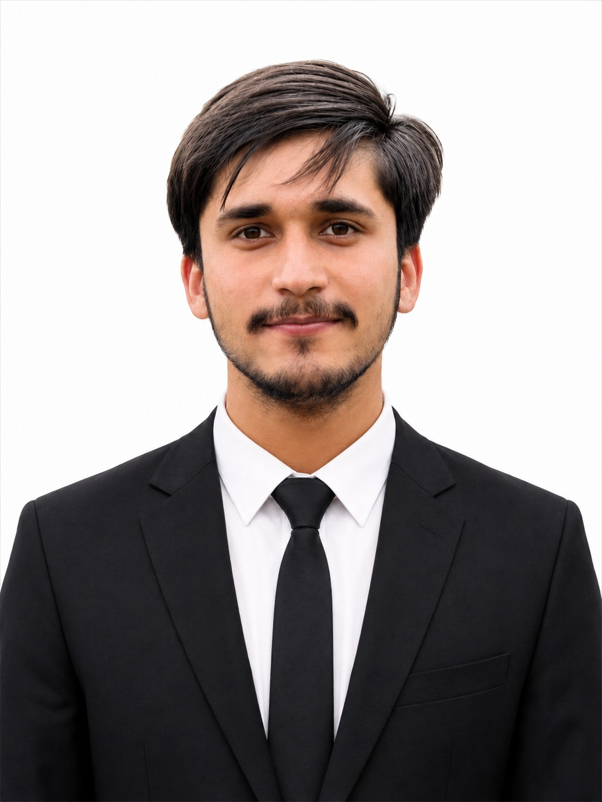
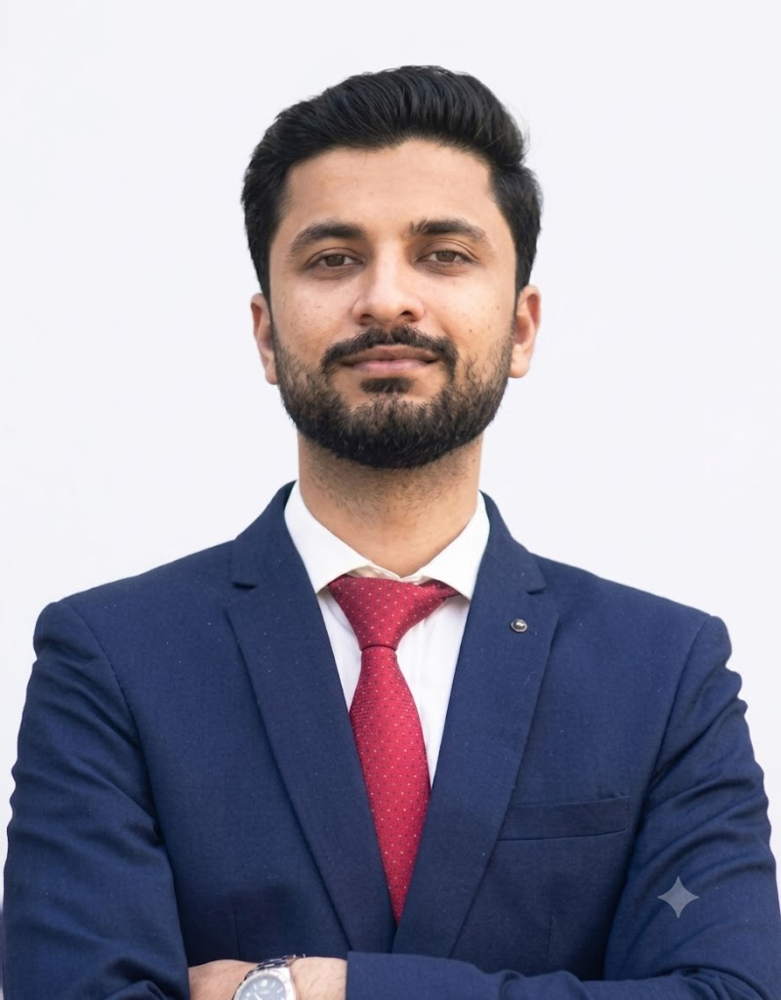
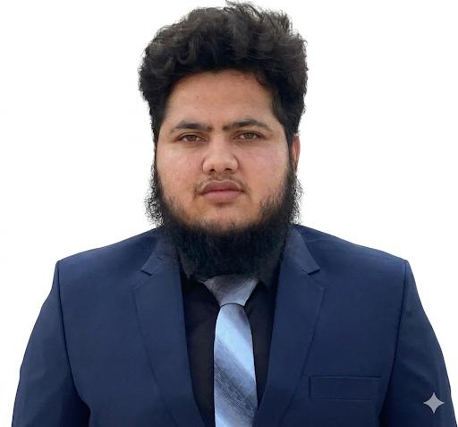

Our Expert Team
Click on a team member to view their full profile & projects.

Saqib Jamal
Mechanical Engineer
Specialist in FEA/CFD simulation, cryogenic systems design, and SolidWorks CAD — from vacuum vessels to kinematic mechanisms.

Muhammad Khuzaifa
Electrical Engineer
Specializes in embedded systems, IoT architecture, and training AI models on MCUs.

Qazi Samiullah
Electrical Engineer
Specializes in power systems, renewable grid integration, and ETAP/Simulink modeling.

Aamiroon Ishaq
CS & AI Engineer
Computer Science graduate from PIEAS. Specializes in LLMs, RAG pipelines, computer vision, and Vision-Language model fine-tuning (LoRA/QLoRA).

Zabiullah Khan
Civil Engineer
Civil Engineering graduate from UET Peshawar. Specialist in structural foundation design, hydrologic modeling (HEC-RAS), and environmental rainwater harvesting.

Umar Asghar
Materials & Corrosion Engineer
Materials & Metallurgical Engineer from PIEAS. Specialist in failure analysis, corrosion engineering (CUI/Cathodic Protection), and Non-Destructive Testing (NDT).

Muhammad Afnan
Electrical Engineer
Electrical Engineering graduate from PIEAS. Specializes in Robotics, MATLAB Signal Processing, and EMG Control Systems.
Hammad Ali
Mechanical Engineer
Specializes in lathe/milling operations, hardware assembly, and structural design.